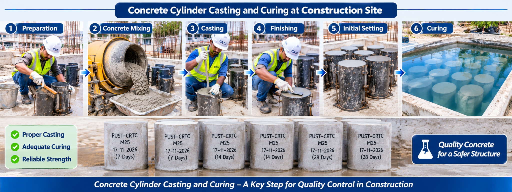

A guideline for making and curing concrete cylinders at your site, then delivering them to the CRTC laboratory for compressive strength testing under ASTM C39/C39M.
ASTM C39 measures the strength of the specimen we receive. It does not measure the strength of the concrete in your structure. Two cylinders cut from the same batch can give different results if one is cured warm and dry and the other cool and moist. Following this guideline keeps that difference small and keeps your results defensible.
| Cylinder size | Layers | Strokes per layer | Rod | After each layer |
|---|---|---|---|---|
| 150 × 300 mm | 3, equal depth | 25 | 16 mm | Tap the mold sides 10–15 times with a mallet to close voids |
| 100 × 200 mm | 2, equal depth | 25 | 10 mm | Tap the mold sides 10–15 times with a mallet to close voids |
Spread the strokes evenly over the cross-section. In the first layer, rod through the full depth without hitting the bottom. In the other layers, penetrate about 25 mm into the layer below. If your concrete has a slump below 25 mm, use an internal vibrator instead and follow the standard for insertion counts.
Store the covered cylinders immediately after finishing, in a place where they will not be disturbed.
Remove the molds 24 ± 8 hours after casting. Mark each cylinder with its ID again on the concrete itself, then move it into final curing within 30 minutes.
| Curing type | When it applies | Conditions |
|---|---|---|
| Standard curing | Acceptance testing, quality control and checking mix proportions | 23 ± 2 °C in lime-saturated water or a moist room (relative humidity at least 95%) with free water on the cylinder surface at all times |
| Field curing | Checking whether the structure’s own curing and protection are adequate, or deciding when forms can be removed | Cured next to the structure, with the same protection and the same temperature exposure as the concrete they represent |
Keep the two separate. Standard-cured and field-cured cylinders answer different questions. If a specification asks for acceptance results, standard curing is required. Please tell us before casting which type of curing you need for each set.
Never let cylinders dry out between the end of curing and testing. Keep them moist up to the minute of testing.
You cure the cylinders at your site. Send them to CRTC ready to test, in the moist condition the standard requires.
Specimens that were not cast or cured under these conditions can still be tested, but the deviations will be stated in the report, and the result may not be accepted by the specifier.
On receipt CRTC checks the labels and condition, prepares the ends, and tests the cylinders at the requested age in accordance with ASTM C39/C39M. Our report states the curing history, the compressive strength to the nearest 0.1 MPa, the fracture type and any deviations noted.
Search, or filter by topic.
Follow your project specification. Cast enough for every test age you need, plus spares. Generally, three cylinders are normally tested per age and averaged.
No. Take portions from at least two points during discharge, not from the very first or last of the load, and combine them into one composite sample.
Fresh concrete loses workability and moisture quickly. Waiting longer means the cylinders no longer represent the concrete that was delivered.
For standard curing, yes: use lime-saturated water at 23 ± 2 °C, or a moist room at 95% relative humidity or above. Plain water can leach lime from the surface of the cylinder.
Where the specification asks for acceptance results, standard curing is required. Field curing checks whether the structure’s own curing and protection are adequate.
Record it on the submission sheet and tell CRTC. Deviations are stated in the report, and the specifier decides whether the result is accepted.
Only for the initial 24 ± 8 hours. After that, demold and move them into curing within 30 minutes.
Tests must be run within a tolerance of the test age: 3 days ±2 h, 7 days ±6 h, 28 days ±20 h, 90 days ±2 days. A test outside that window is reported with its actual age.
Wrap each in wet cloth, seal it in plastic, and place it upright in a rigid, cushioned crate. Keep it out of sun, heat and freezing. Do not cap or trim the ends.
Tell CRTC. Dry cylinders can give a different strength, so the condition on arrival is recorded in the report.
Specimen ID, age at test, curing history, average diameter, maximum load, compressive strength to the nearest 0.1 MPa, fracture type, and any deviations or defects noted.
No. ASTM C39 measures the specimen you cast and cured. In-place strength can differ and may need cores or other investigation.
Reports are normally issued within two working days of testing. Confirm turnaround with CRTC when you book.
No matching questions. Try another word.
This guideline summarizes good practice from ASTM C31/C31M, C192/C192M and C39/C39M. It does not replace the standards or your project specification, which govern if they differ. Please confirm values against the current editions before relying on this page. Questions: CRTC · crtc.ce@pust.ac.bd · +8802588844915 · CRTC, CE, PUST